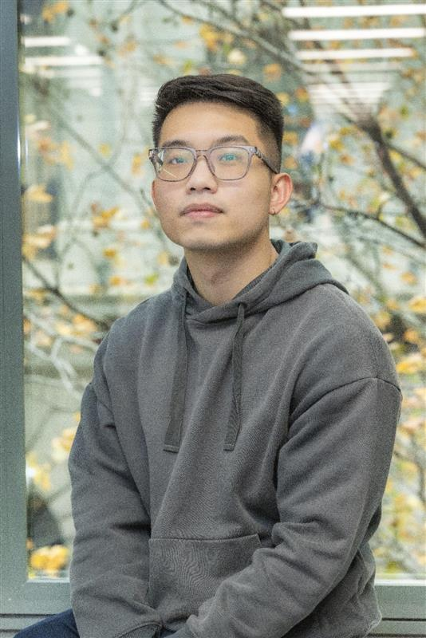
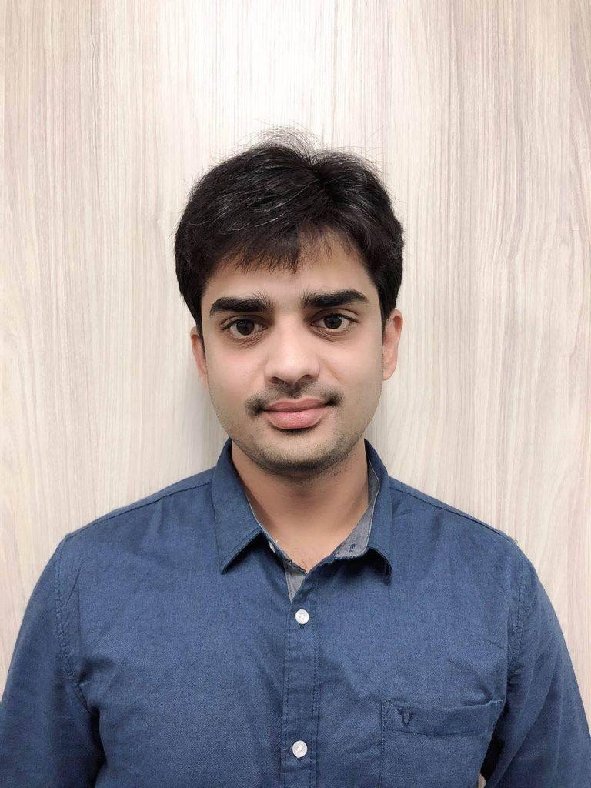
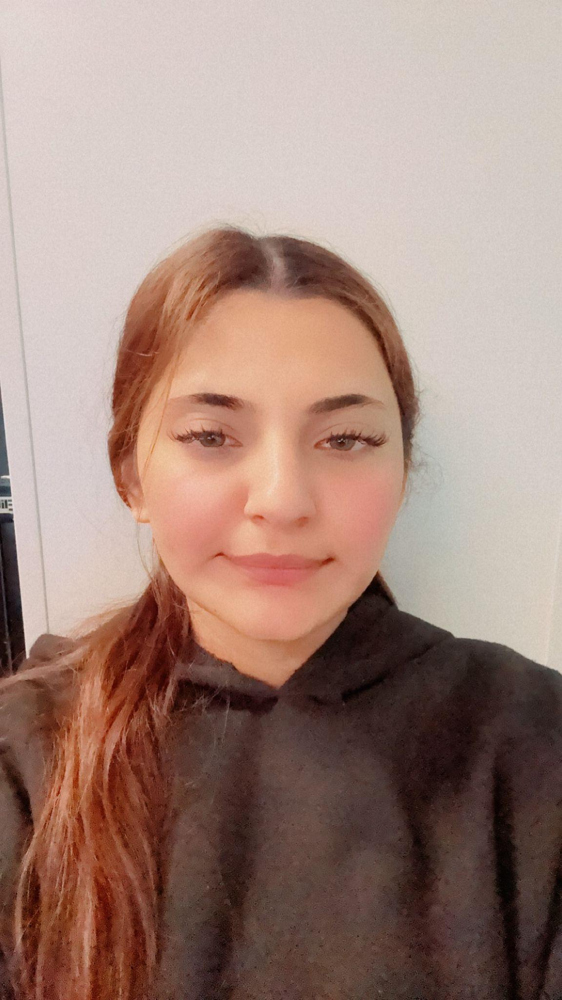

Meet the iHelp Tech Support Team
Dedicated professionals ready to assist you with all your technology needs.
Our Experts
Our team of skilled technicians and support staff is committed to providing top-notch technical assistance to the SIBT and WSUSCC community. We bring a diverse range of expertise and a shared passion for solving your tech challenges, ensuring you can focus on your studies and work without interruption.
Harry Aung
Learning Technologies Manager
Harry oversees the strategic implementation and management of learning technologies, ensuring robust and innovative solutions that enhance educational delivery and user experience across both campuses.

Benjamin Nguyen
iHelp Coordinator
Benjamin manages the daily operations of the iHelp support desk, optimizing service delivery and ensuring efficient resolution of all technical inquiries for students and staff.

Abhiram Mukkavelli
Senior iHelp Technician
Abhiram provides advanced technical support and troubleshooting for complex system issues, delivering specialized expertise in critical software and hardware solutions essential for academic and administrative functions.

Jashan Kaur
iHelp Technician
Jashan delivers frontline technical assistance, addressing a broad spectrum of user issues from software installation to connectivity problems, ensuring timely and effective support for all users.